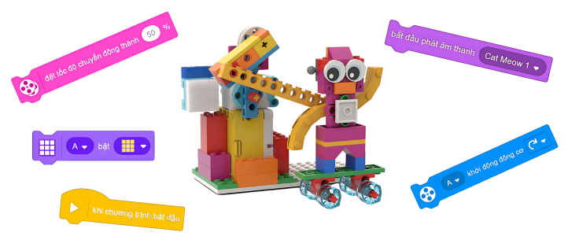

Buổi 10: Ôn tập giữa kỳ
Mô hình “Vận động viên trượt tuyết”
Mục tiêu bài học
- ✔️ Học sinh ôn tập và thực hành tổng hợp các nhóm khối lệnh đã học.
- ✔️ Làm quen và vận dụng các khối lệnh:
- Khối lệnh đèn (Light Blocks)
- Khối lệnh động cơ (Motor Blocks)
- Khối lệnh âm thanh (Sound Blocks)
- Khối lệnh chuyển động (Movement Blocks)
- ✔️ Hiểu quy trình xây dựng và vận hành mô hình trượt tuyết.
- ✔️ Ôn tập nhanh kiến thức đã học.
- ✔️ Lập kế hoạch thiết kế mô hình trượt tuyết.
- ✔️ Lắp ráp mô hình theo kế hoạch.
- ✔️ Lập trình điều khiển mô hình.
- ✔️ Trình diễn và chia sẻ sản phẩm.
- ✔️ Rèn tư duy tổ chức chương trình theo trình tự rõ ràng.
- ✔️ Tư duy sáng tạo: tự do thiết kế mô hình và lập trình kịch bản robot.
- ✔️ Chủ động, tích cực tham gia các hoạt động học tập và thực hành.
- ✔️ Làm việc nhóm hiệu quả: phối hợp ý tưởng, phân chia vai trò, trình bày sản phẩm.
- ✔️ Chuẩn bị tâm thế nghiêm túc, sẵn sàng cho bài kiểm tra giữa kỳ ở Buổi 11.
Giới thiệu nội dung bài học
-
Giới thiệu mô hình
-
Chuẩn bị vật liệu
-
Xây dựng mô hình
-
Ôn tập tổng hợp
-
Tổng kết bài học
Giới thiệu mô hình

Lắp ráp mô hình
Ôn tập tổng hợp
-
🧑💻 Bật ma trận màu 3x3 trong một khoảng thời gian

Khối lệnh này tạo một mẫu và làm sáng nó trên ma trận màu 3x3 trong một khoảng thời gian xác định. Khi hết thời gian, khối lệnh sẽ tự động tắt các điểm ảnh.
🧑💻 Bật ma trận màu 3x3

Khối lệnh này tạo một mẫu và làm sáng nó trên ma trận màu 3x3. Mẫu sẽ tiếp tục hiển thị cho đến khi ma trận được yêu cầu thực hiện hành động khác hoặc chương trình dừng lại.
🧑💻 Tắt ma trận màu 3x3

Khối lệnh này tắt toàn bộ đèn trên ma trận màu 3x3.
🧑💻 Thiết lập độ sáng cho ma trận màu 3x3

Khối lệnh này thiết lập độ sáng của ma trận màu 3x3 cho khối lệnh tiếp theo trong đoạn mã lập trình có sử dụng ma trận màu, chẳng hạn như khối Bật ma trận màu 3x3. Nếu độ sáng chưa được thiết lập, giá trị mặc định là 100%.
🧑💻 Thiết lập độ sáng điểm ảnh trên ma trận màu 3x3

Khối lệnh này thiết lập màu sắc và độ sáng cho một điểm ảnh cụ thể trên ma trận màu 3x3. Chỉ điểm ảnh được chỉ định sẽ được cập nhật, các điểm ảnh còn lại không thay đổi.
🧑💻 Xoay hướng hiển thị của ma trận màu 3x3

Khối lệnh này xoay hướng hiển thị trên ma trận màu 3x3 theo chiều kim đồng hồ hoặc ngược chiều kim đồng hồ.
🧑💻 Thiết lập hướng hiển thị của ma trận màu 3x3

Khối lệnh này thiết lập hướng hiển thị của nội dung trên ma trận màu 3x3. Hướng có thể được đặt là đúng chiều (upright), ngược (upside down), trái (left) hoặc phải (right). Hướng mặc định là upright.
-
🧑💻 Chạy động cơ theo thời lượng

Khối lệnh này cho phép chạy một hoặc nhiều động cơ theo chiều kim đồng hồ hoặc ngược chiều kim đồng hồ trong một khoảng thời gian xác định, có thể tính bằng:
- Số vòng quay (rotations)
- Số giây (seconds)
- Số độ (degrees)
🧑💻 Đưa động cơ đến vị trí xác định

Khối lệnh này đặt một hoặc nhiều động cơ quay đến một vị trí góc xác định, động cơ có thể quay:
- Theo chiều kim đồng hồ
- Ngược chiều kim đồng hồ
- Hoặc theo đường ngắn nhất để đến vị trí đã chọn.
🧑💻 Khởi động động cơ

Khối lệnh này cho phép chạy một hoặc nhiều động cơ liên tục theo chiều kim đồng hồ hoặc ngược chiều kim đồng hồ cho đến khi có lệnh dừng
Tốc độ động cơ được thiết lập bởi khối Set Speed, tốc độ mặc định là 75%.🧑💻 Dừng động cơ

Khối lệnh này dùng để dừng một hoặc nhiều động cơ đang chạy.
Khi dừng, động cơ sẽ phanh lại để nhanh chóng dừng hẳn, không quay trớn.🧑💻 Thiết lập tốc độ động cơ

Khối lệnh này dùng để đặt tốc độ quay cho một hoặc nhiều động cơ.
- Dải giá trị tốc độ: -100 đến 100
- Giá trị âm → động cơ quay ngược chiều
- Nếu không đặt tốc độ, mặc định là 75%
🧑💻 Vị trí động cơ

Khối lệnh này dùng để đọc vị trí hiện tại của động cơ.
Vị trí được tính bằng độ, trong khoảng từ 0 đến 359 độ.🧑💻 Tốc độ động cơ

Khối lệnh này dùng để đọc tốc độ thực tế hiện tại của động cơ.
Giá trị trả về là tốc độ thực, không phải tốc độ đã đặt bằng khối Set Speed. -
🧑💻 Phát âm thanh cho đến khi hoàn thành

Khối này phát âm thanh được chọn trên thiết bị của bạn và tạm dừng phần lập trình phía sau cho đến khi âm thanh kết thúc. Âm thanh có thể được thêm vào dự án bằng cách sử dụng nút Add Sound (Thêm âm thanh).
🧑💻 Bắt đầu phát âm thanh

Khối này bắt đầu phát âm thanh được chọn trên thiết bị của bạn và phát trong lúc những đoạn mã khác đang thực thi. Âm thanh có thể được thêm vào dự án bằng cách sử dụng nút Add Sound (Thêm âm thanh).
🧑💻 Dừng phát tất cả âm thanh

Khối này sẽ dừng phát tất cả các âm thanh hiện đang được phát (tức là tiếng bíp và các tệp âm thanh).
🧑💻 Thay đổi hiệu ứng cao độ bằng

Khối này dùng để tăng hoặc giảm hiệu ứng cao độ (pitch) hoặc độ lệch loa trái – phải của âm thanh đang phát. Hiệu ứng độ lệch xác định loa đang phát ra âm thanh, với "-100" chỉ là loa trái, "0" là bình thường và "100" chỉ là loa phải.
🧑💻 Thiết lập hiệu ứng cao độ bằng

Khối này thay đổi hiệu ứng cao độ hoặc quay trái/phải của âm thanh đang được phát trên thiết bị. Hiệu ứng quay xác định loa đang phát ra âm thanh, với "-100" chỉ là loa trái, "0" là bình thường và "100" chỉ là loa phải.
🧑💻 Xóa hiệu ứng âm thanh

Khối này thiết lập cả hiệu ứng cao độ và độ lệch trái/phải về mức bình thường.
🧑💻 Thay đổi âm lượng

Khối này thay đổi âm lượng của âm thanh hiện đang được phát theo mức âm lượng tăng dần được chỉ định từ âm lượng đang phát. Âm lượng mặc định là 100%.
🧑💻 Đặt âm lượng

Khối này đặt âm lượng của âm thanh. Âm lượng mặc định là 100%.
🧑💻 Âm lượng

Khối này báo cáo âm lượng âm thanh hiện tại.
-
🧑💻 Di chuyển trong khoảng thời gian

Khối này di chuyển Đế truyền động tiến hoặc lùi, hoặc quay theo chiều kim đồng hồ hoặc ngược chiều kim đồng hồ theo số centimet, inch, giây, độ hoặc góc quay được chỉ định. Khoảng cách được di chuyển theo centimet và inch tùy thuộc vào cách thiết kế hoạt động của đế truyền động.
Sử dụng khối Đặt 1 vòng quay động cơ thành khoảng cách đã chuyển động đế hiệu chỉnh Đế truyền động của các em.🧑💻 Bắt đầu chuyển động

Khối này sẽ bắt đầu di chuyển Đế truyền động về phía trước hoặc phía sau hoặc quay theo chiều kim đồng hồ hoặc ngược chiều kim đồng hồ.
🧑💻 Di chuyển với thiết bị dẫn hướng trong khoảng thời gian

Khối này di chuyển đế dẫn động về phía trước trong một khoảng thời gian nhất định với khả năng dẫn hướng. Giá trị dẫn hướng cao hơn (ví dụ: +99 và -99) sẽ làm cho lộ trình đường vòng cung của đế dẫn động trở nên rõ ràng hơn. Sử dụng giá trị "0" để dẫn động theo đường thẳng. Sử dụng các giá trị 100 và -100 sẽ làm cho đế dẫn động tự xoay vòng.
🧑💻 Bắt đầu di chuyển với thiết bị dẫn hướng

Khối này bắt đầu di chuyển đế dẫn động về phía trước với khả năng dẫn hướng mãi mãi. Giá trị dẫn hướng cao hơn (ví dụ: +99 và -99) sẽ làm cho lộ trình đường vòng cung của đế dẫn động trở nên rõ ràng hơn. Sử dụng giá trị “0” để dẫn động theo đường thẳng. Sử dụng các giá trị 100 và -100 sẽ làm cho đế dẫn động tự xoay vòng.
🧑💻 Dừng di chuyển

Khối này dừng mọi chuyển động của đế dẫn động bằng cách tắt động cơ.
🧑💻 Đặt tốc độ di chuyển

Khối này đặt tốc độ của đế dẫn động đang di chuyển. Phạm vi tốc độ là từ -100 đến 100. Các giá trị âm sẽ làm thay đổi hướng chuyển động. Giá trị mặc định là 50%.
🧑💻 Đặt động cơ chuyển động

Khối này xác định các cổng mà 2 động cơ dẫn động được kết nối.
🧑💻 Đặt 1 vòng quay động cơ thành khoảng cách đã chuyển động

Khối này hiệu chỉnh khoảng cách của đế dẫn động để đơn vị khoảng cách (như centimet/inch) được xác định trong các khối di chuyển sẽ chính xác.
-
🧑💻 Chờ trong một khoảng thời gian

Khối lệnh này tạm dừng đoạn mã lập trình trong một số giây xác định — hỗ trợ cả số nguyên và số thập phân.
🧑💻 Vòng lặp lặp lại

Tất cả các khối lệnh được đặt bên trong khối này sẽ được lặp lại một số lần xác định trước khi chương trình tiếp tục chạy các lệnh phía sau.
🧑💻 Vòng lặp vô hạn

Tất cả các khối lệnh được đặt bên trong khối này sẽ lặp lại mãi mãi. Cách duy nhất để dừng vòng lặp là ngắt chương trình bằng cách nhấn nút Stop hoặc sử dụng khối Stop All.
🧑💻 Nếu… thì…

Khối lệnh này kiểm tra xem điều kiện logic (boolean) được chỉ định có đúng hay không.
- Nếu điều kiện đúng, tất cả các khối lệnh bên trong sẽ được thực hiện.
- Nếu điều kiện sai, các khối lệnh sẽ bị bỏ qua.
🧑💻 Nếu… thì… ngược lại…

Khối lệnh này kiểm tra xem điều kiện logic được chỉ định có đúng hay không.
- Nếu điều kiện đúng, các khối lệnh trong vùng thứ nhất sẽ được thực hiện và chương trình tiếp tục.
- Nếu điều kiện sai, các khối lệnh trong vùng thứ hai sẽ được thực hiện.
🧑💻 Chờ cho đến khi…

Khối lệnh này tạm dừng đoạn mã lập trình cho đến khi điều kiện logic được chỉ định trở thành đúng.
🧑💻 Lặp cho đến khi…

Tất cả các khối lệnh bên trong khối này sẽ lặp lại cho đến khi điều kiện logic được chỉ định là đúng. Khi điều kiện trở thành đúng, các khối lệnh phía bên dưới sẽ được thực hiện.
🧑💻 Dừng các đoạn mã khác

Khối lệnh này dừng tất cả các đoạn mã lập trình khác, ngoại trừ ngăn xếp hiện tại.
🧑💻 Dừng (Stop)

Khối lệnh này dùng để:
- Dừng tất cả các ngăn xếp lập trình đang chạy
- Chỉ dừng ngăn xếp hiện tại
- Hoặc thoát khỏi chương trình